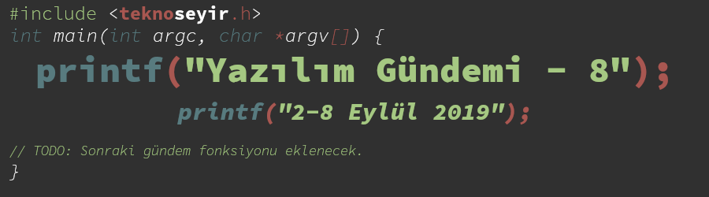
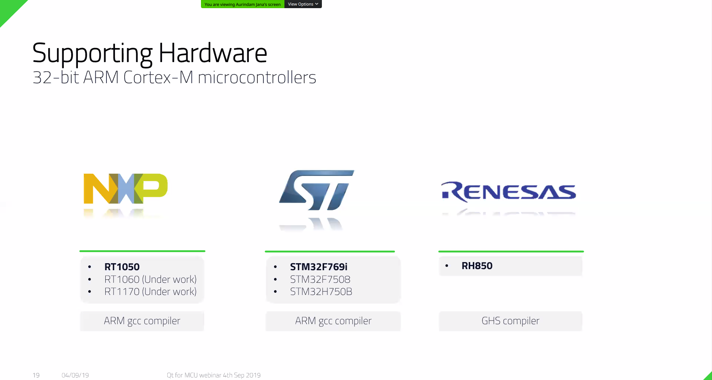
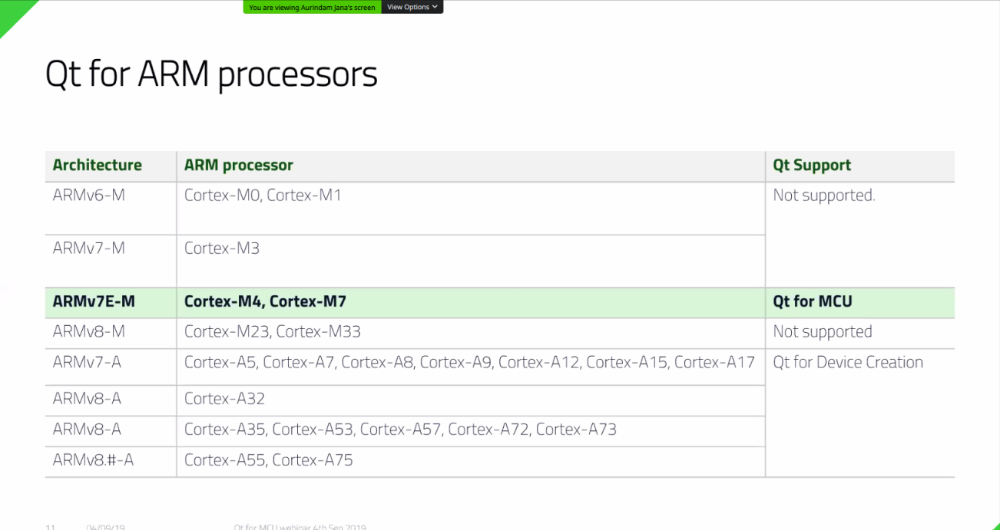
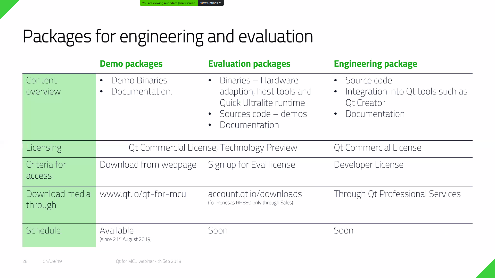
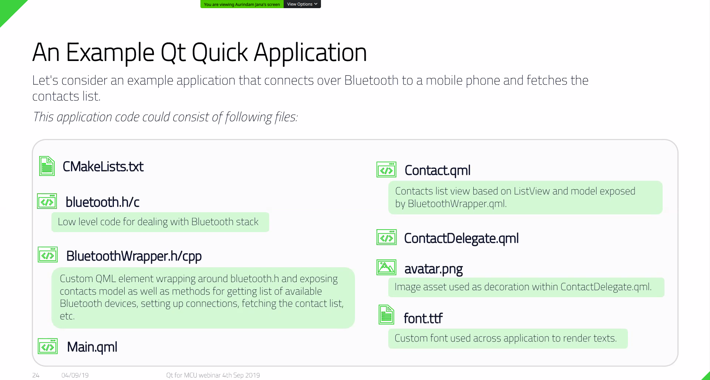
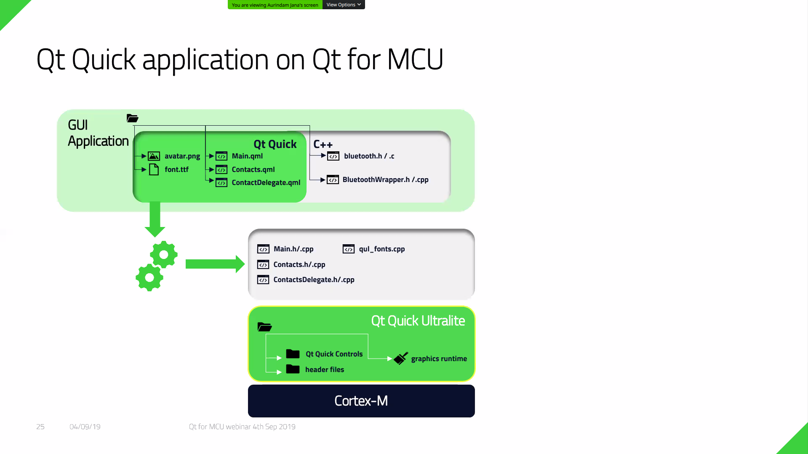
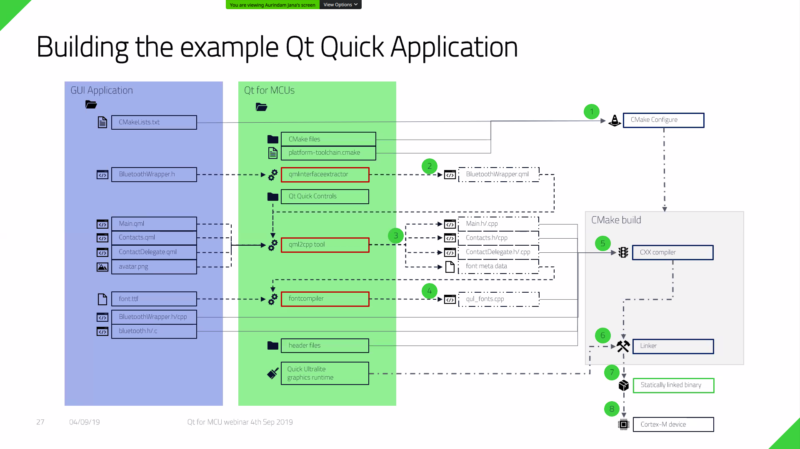
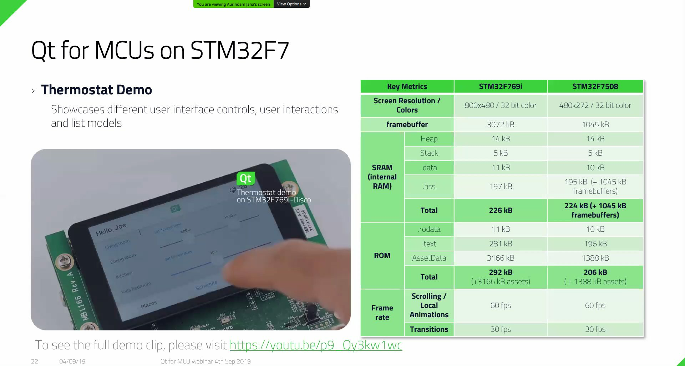
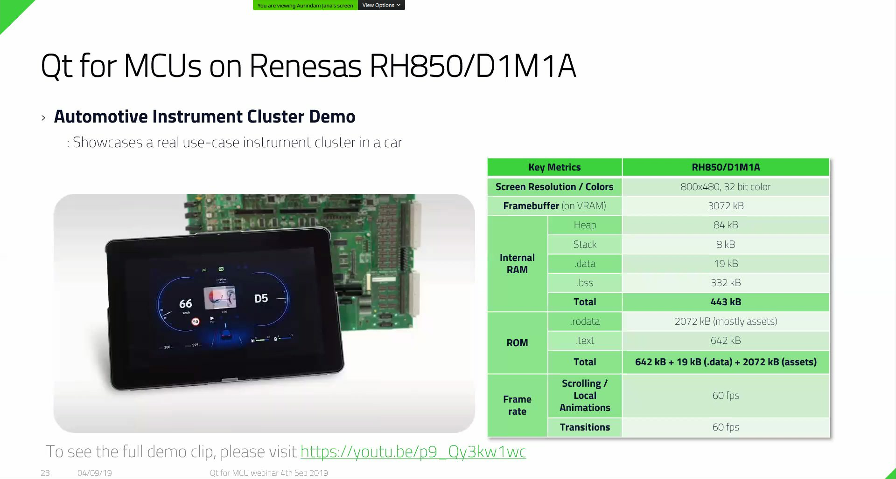
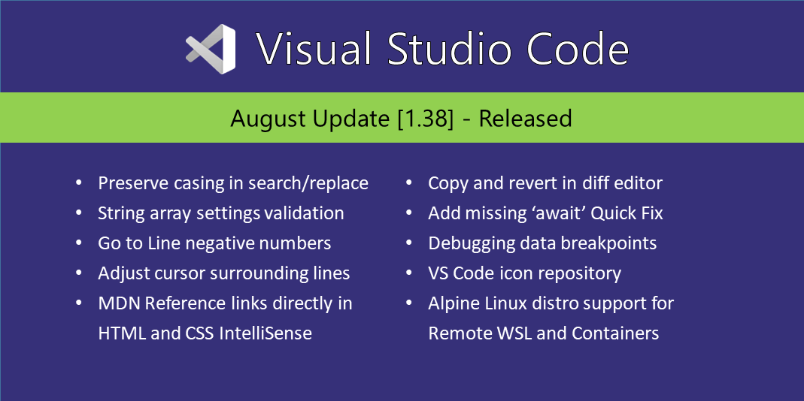

Yazılım Gündemi - 8
2-8 Eylül 2019
İçindekiler

< Önceki Gündem | 2-8 Eylül 2019 | Sonraki Gündem >
1 IEEE Spectrum, popüler ilk 10 programlama dili listesini yayınlandı
Amerika'da yer alan Institute of Electrical and Electronics Engineers (Elektrik ve Elektronik Mühendisleri Enstitüsü) tarafından her yıl yayınlanan "en popüler 10 programlama dili" listesinin 2019 sürümü bu hafta yayınlandı. Liste sıralaması bu şekilde:

Listenin filtrelenebilir hali ve devamı için bu sayfaya göz atabilirsiniz.
2 COBOL programlama dili 60 yaşında
İlk olarak 1959 duyurulan COBOL programlama dili bu hafta itibariyle 60.yaşını doldurdu. Ben dahil yazıyı okuyan herkesten daha büyük olduğu için hakkında pek bilgiye sahip değilim fakat konu başlığına eklediğim bağlantıdaki habere göre basit söz dizimi (syntax) sayesinde diğer programlama dillerinden öne çıkabilmiş. Haberde benim ilginçime giden programlama dilinin yaratıcılarının destek ve potansiyel müşteri bulabilmeleri için 41 bilgisayar üreticisi ile Pentagon'da Committee of the Conference on Data Systems Languages (CODASYL) isimli konferansta toplantı yapması ve programlama dilinin isminin de orada konulması. Yoksa COBOL bir Pentagon projesi mi?! :) Neyse şaka bir yana, programlama tarihiyle ilgili arkadaşların konu başlığındaki yazıyı okumalarını tavsiye ederim. İleri bir okuma için de, COBOL'un 60 yaşına gelebilmesini sağlayan 6 neden başlıklı şu yazı okunabilir.
3 Laravel 6 sürümü yayınlandı
Popüler PHP web framework sistemi olan Laravel, 6 numaralı LTS (Long-Term Support - Uzun dönemli destek) sürümünü bu hafta içerisinde duyurdu. Ayrıca bir önceki LTS sürümü olan 5.5 sürümünün de 30 Ağustos 2019 itibariyle hata çözme güncellemesini almayacağını fakat güvenlik güncelleştirmeleri almaya 30 Ağustos 2020'ye kadar devam edeceği bilgisi de duyuru yazısında yer aldı. Laravel 6 ile gelen bazı özellikler ise şu şekilde:
- Yetkilendirme cevapları geliştirilmiş: Önceden son kullanıcıya özel hata
mesajları göstermek zormuş fakat bu sürümde
Gate::inspectfonksiyonu eklenerek bu çözülmüş. Örnek kullanım için konu başlığındaki bağlantıya tıklayabilirsiniz. - Laravel 5.x numaralı sürümlerle birlikte gelen UI özellikleri artık laravel/ui isimli ayrı bir proje haline geldi. Kullanmak için özel olarak eklemeniz gerekiyor.
- Job Middleware
- Lazy Collections
Diğer değişiklikler ve yenilikler için konu başlığına eklediğim bağlantıya tıklayabilir ya da bu bağlantıları inceleyebilirsiniz:
4 Mikrokontrolcüler için Qt kütüphanesi webineri düzenlendi
Yazılım Gündemi - 6 yazısında haberini yaptığım kütüphanenin bu hafta içerisinde webineri (sanal seminer) düzenlendi ve bazı detaylara yer verildi. Webinere kayıt olup izlemek istemiştim fakat kurumsal bir e-posta adresi ve şirket ismi gerekiyordu. Şu an bir şirkette çalışmadığım için kayıt olamadım fakat Cem Koç arkadaşımız kayıt olmuş ve şu şekilde bazı notlar almış:
- Cortex-m için rtems üzerine Qt Lite kullanılıyor.
- Cortex-a için Linux tabanı sistemler üzerine inşaa edilecek. Ama burada Qt Lite yerine Qt kullanılıyor.
- Qt for MCUs sadece ticari lisanslanacak. Açık kaynak versiyonu yok. Üzdü açıkçası.
- Webinar'da bir uygulama derlendi. Çok basitçe yaptılar gerçekten. Uygulamayı masaüstü programı olarak test edip direkt binary oluşturacak gibi sadece hedefi değiştirerek derlenebiliyor. Klasik Qt.
Yine Cem Koç hocanın Webiner'den aldığı bazı ekran görüntüleri:
       
Webiner kaydı daha sonra bu adreste yayınlanmış. Benim izleyecek vaktim olmadı fakat ilgili arkadaşları mutlaka bakmalarını tavsiye ederim.
5 Visual Studio Code 1.38 (Ağustos 2019) sürümü yayınlandı

6 Diğer Haberler
- Apple'ın AppStore'daki bazı uygulamaların fikirlerini kopyaladığı dair iddialar var.
- Google, kod review süreçleriyle ilgili rehber hazırladı.
- Google, akademik araştırmalar için yeni bir veri gizliliği teknolojisi duyurdu: Differential Privacy. GitHub Deposu
- WinUI API sisteminde değişiklikler var.
- Securitum takımı, yeni HTML elementi portal hakkında güvenlik analizi yazısı yayınlandı.
- PHP topluluğu,
Union Typesözelliğini tartışıyor. - PHP programlama dilinin 7.4.0 RC1 sürümü yayınlandı.
- Go programlama dilinin 1.13 sürümü duyuruldu.
- D programlama dilinin 2.088.0 sürümü yayınlandı.
- Mozilla, Manifest V3 hakkında sıkça sorulan sorular yazısı yayınlandı.
- Frontend geliştiriciler için açık kaynak backend sunucusu aracı açık kaynak olarak yayınlandı: AppWrite, GitHub Deposu.
- AITO firması, yapay zeka destekli yeni bir veritabanı türü tanıttı: Predictive Database.
- Python ile terminal bazlı kullanıcı arayüzleri geliştirmeye yarayan toot kütüphanesi 0.23.0 sürümünü duyurdu. Değişiklik Notları, Demo.
- YugaByte DB 1.3.1 sürümü duyuruldu.
- Quasar Framework 1.1.0 sürümü yayınlandı, GitHub Deposu.
7 Lisans

Yazılım Gündemi - 8 yazısı Eren Hatırnaz tarafından Creative Commons Atıf-GayriTicari-AynıLisanslaPaylaş 4.0 Uluslararası Lisansı (CC BY-NC-SA 4.0) ile lisanslanmıştır.